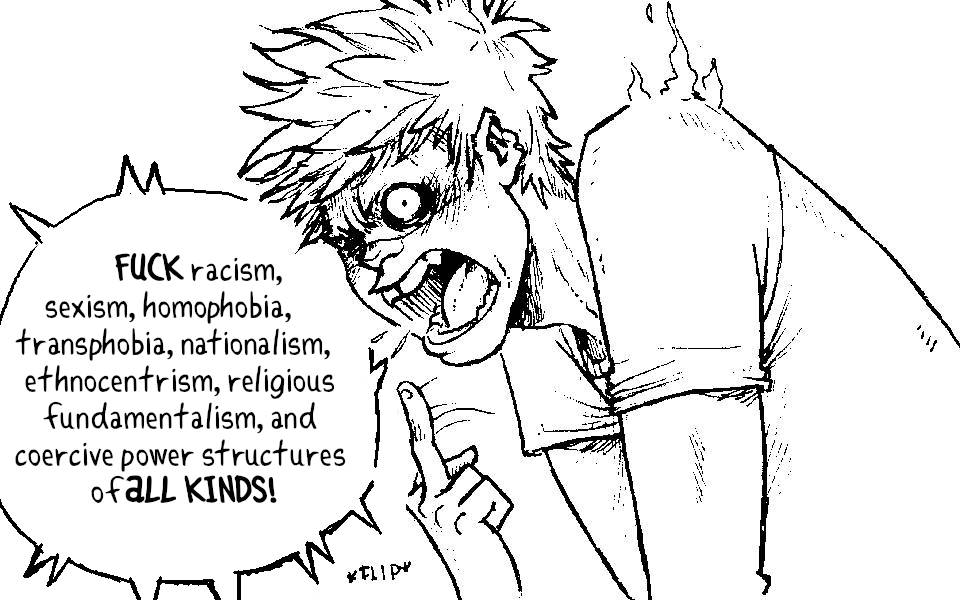

Kokorobot is a mix of kokoro (heart, in Japanese) and robot to mean robot heart. It is meant to have a French pronunciation. It dates back to 2011, see the former logo[95.4 kB] for the website.
{kind=link}
I,Rek, live aboard a sailboat somewhere in the Salish Sea.
See what I'm reading right now, and what tools I'm using. Rekka is a name that I chose, inspired from the name Rakka in the anime Haibane Renmei.
This website has no tracking or analytics.
Website concepts

Above is the rough concept for the menu icons of kokorobot.ca. I sketched them on paper, photographed them with a shitty laptop camera and cleaned it up in Krita.
Licenses
DO NOT resell or mint my work.
The license applies to all the documented projects, the projects themselves and their assets. The website source code is under the MIT License. The assets and text content is under the BY-NC-SA4.0 License.
Politics
A short post to make it clear where I stand as a person, and with my work.
I am committed to fighting normative violence, fascism, colonialism, and white supremacy in all of its forms. To undermine the capitalist structure and its abusive scripts about human worth in relation to work, productivity, and ownership. To subvert oppressive gender norms and put in questi on the binary. To actively unlearn biased and colonial thinking.
I am aggressively opposed to racism, sexism, homophobia, transphobia, nationalism, ethnocentrism, religious fundamentalism, and oppressive and coercive power structures of all kinds.
Some of the wording borrowed from the fantastic Blood and Dust project.